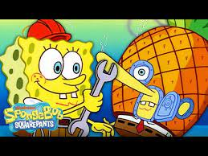
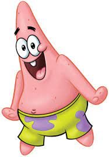
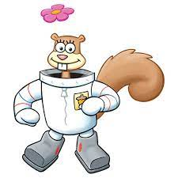
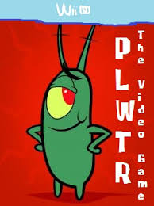

spongebob

spongebob
It does have some name-calling and taunting that parents with young kids must be aware of, but there is no strong profanity in the series. Other than that, characters like SpongeBob and Patrick do not use their common sense as much as they should, but they are never mean to those around them.
Cool down this summer by heading back down to Bikini Bottom with brand new episodes of SpongeBob SquarePants, premiering weekdays at 1:00 p.m. (ET/PT) starting Monday, June 19, only on Nickelodeon!
SpongeBob's grandmother refers to him as an "adult" and "grown-up" on more than one occasion. He also appears older than Pearl, who -- as mentioned above -- turns 16 in the show.
patrick

patrick
Patrick Starrr (born Patrick Simondac) is a Filipino-American make-up artist, and social media influencer.
The title character is a sea sponge named SpongeBob. He has two neighbors: a pink starfish named Patrick and an arrogant octopus named Squidward.
Spongebob: ADHD, Patrick: Down syndrome, Squidward: depression; Mr.
sandy

sandy
Sandy Cheeks, the bassist of The Infection, was found dead in her Arlington home. It was later determined that Sandy Cheeks died on July 14th, just two days before her body was found. Arlington detectives have stated that Sandy had "several cuts on her arms and shoulders with several pieces of cocaine".
Sandy Cheeks doesn't have children. In that one episode where it appeared she had kids, it actually states that they are her nephews.
At times, Sandy's name is implied to be short for "Sandra." That said, as she is mentioned having a twin brother named Randy, it's likely her parents gave her a name that rhymes. Outside the cartoon in supplementary material, she is sometimes given a middle name.
planton

planton
Plankton are usually microscopic, often less than one inch in length, but they also include larger species like some crustaceans and jellyfish. Scientists classify plankton in several ways, including by size, type, and how long they spend drifting.
A bloom may last several weeks, but the life span of any individual phytoplankton is rarely more than a few days.
A sudden disappearance of phytoplankton would lead to the complete collapse of the aquatic ecosystem. In addition, if all the plankton disappeared it would increase the levels of carbon in our air, thus further accelerating climate change.